Soru 1Cevap: A
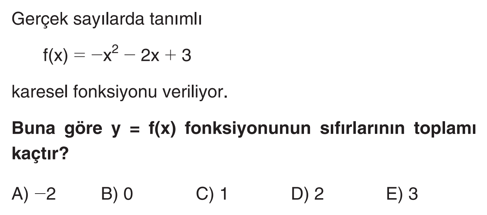
Çözüm
- $-x^2-2x+3=-(x^2+2x-3)$.
- $=-(x+3)(x-1)$: sıfırlar $-3$ ve $1$.
- Toplam $-2$ (A).
Cevap: A
Soru 2Cevap: B
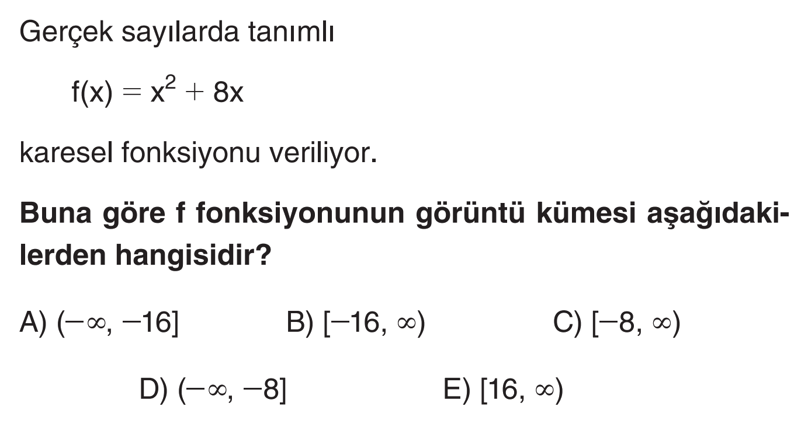
Çözüm
- $x^2+8x=(x+4)^2-16$.
- $(x+4)^2\ge0\Rightarrow f(x)\ge-16$.
- Görüntü kümesi $[-16,\infty)$ (B).
Cevap: B
Soru 3Cevap: B
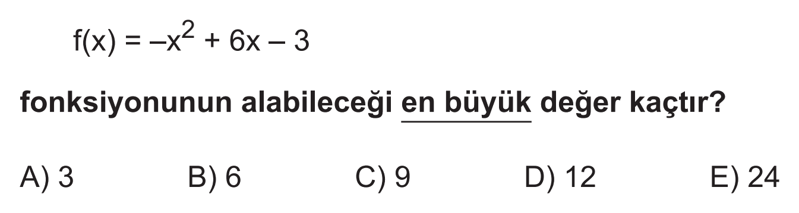
Çözüm
- $-x^2+6x-3=-(x^2-6x+9)+9-3$.
- $=-(x-3)^2+6$.
- $-(x-3)^2\le0$ olduğundan en büyük değer $6$ (B).
Cevap: B
Soru 4Cevap: E
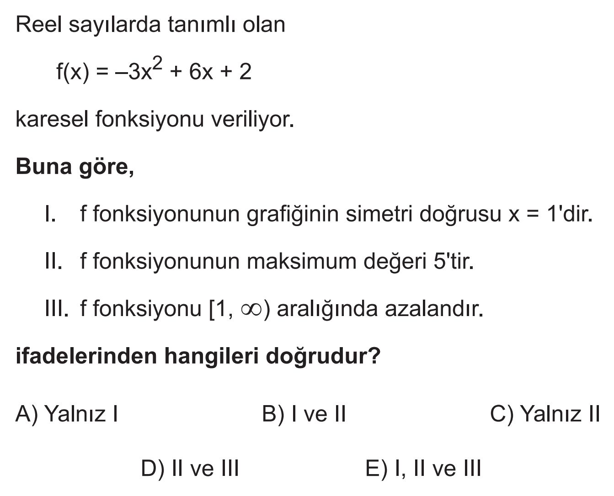
Çözüm
- $-3x^2+6x+2=-3(x^2-2x+1)+3+2=-3(x-1)^2+5$.
- Simetri doğrusu $x=1$, en büyük değer $5$.
- $a\lt0$: tepenin sağında, $[1,\infty)$'da azalan. Üçü de doğru (E).
Cevap: E
Soru 5Cevap: C
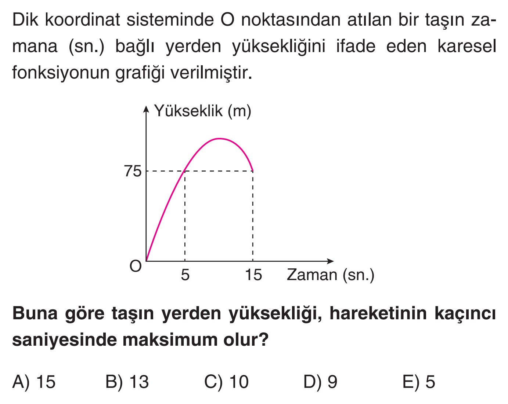
Çözüm
- Parabol simetri eksenine göre simetriktir: eşit yükseklikler eksenden eşit uzaklıktadır.
- $t=5$ ve $t=15$'te yükseklik $75$: eksen $t=\dfrac{5+15}2$.
- En yüksek nokta $10$. saniyede (C).
Cevap: C
Soru 6Cevap: C
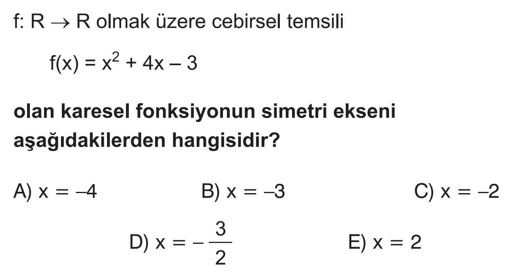
Çözüm
- $x^2+4x-3=(x+2)^2-7$.
- Tepe noktası $(-2,-7)$.
- Simetri ekseni $x=-2$ (C).
Cevap: C
Soru 7Cevap: E
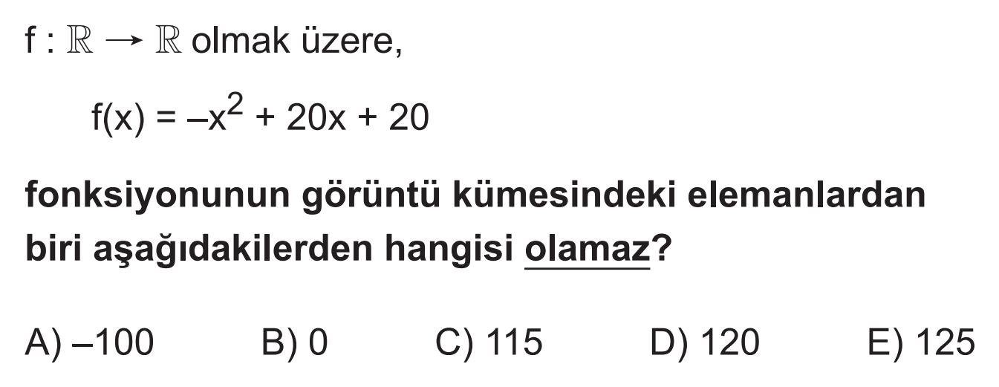
Çözüm
- $-x^2+20x+20=-(x-10)^2+120$.
- $-(x-10)^2\le0\Rightarrow f(x)\le120$; görüntü kümesi $(-\infty,120]$.
- $125$ bu kümede değil (E).
Cevap: E
Soru 8Cevap: E
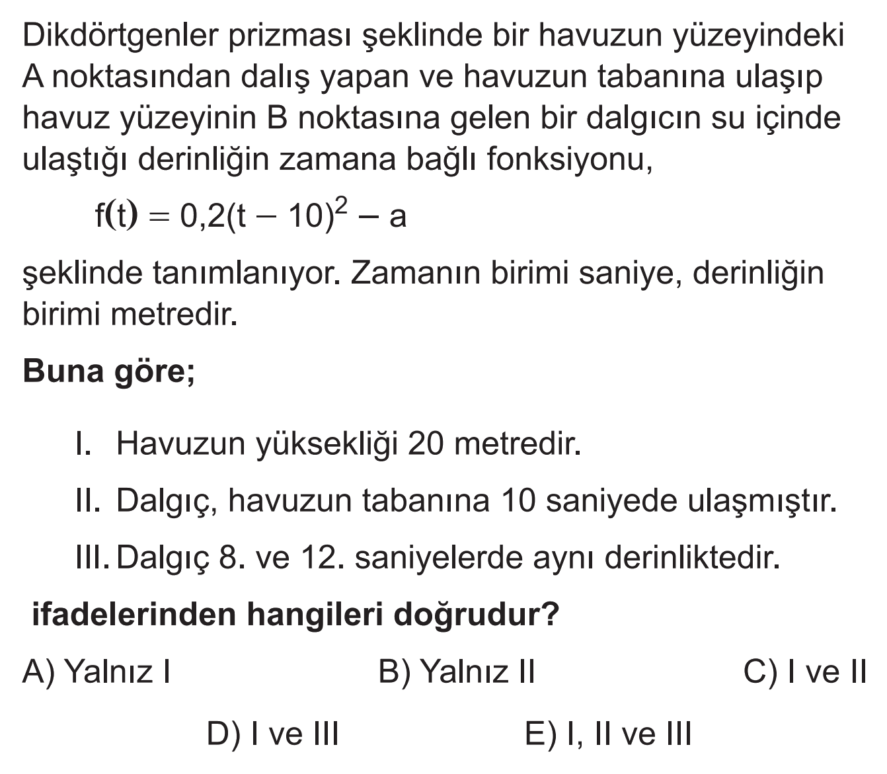
Çözüm
- Dalgıç yüzeyden ($t=0$, derinlik $0$) başlar: $0{,}2\cdot100-a=0\Rightarrow a=20$; havuz yüksekliği en derin nokta $20$ m (I).
- Tepe noktası $t=10$: tabana $10$. saniyede ulaşır (II).
- $8$ ve $12$, $t=10$'a eşit uzaklıkta: $f(8)=f(12)$ (III). Cevap E.
Cevap: E
Soru 9Cevap: D
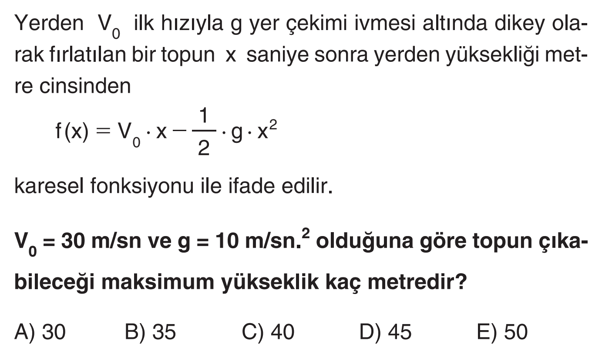
Çözüm
- $f(x)=30x-\dfrac12\cdot10\cdot x^2=30x-5x^2$.
- $=-5(x^2-6x)=-5(x-3)^2+45$.
- En büyük yükseklik $45$ m (D).
Cevap: D
Soru 10Cevap: B
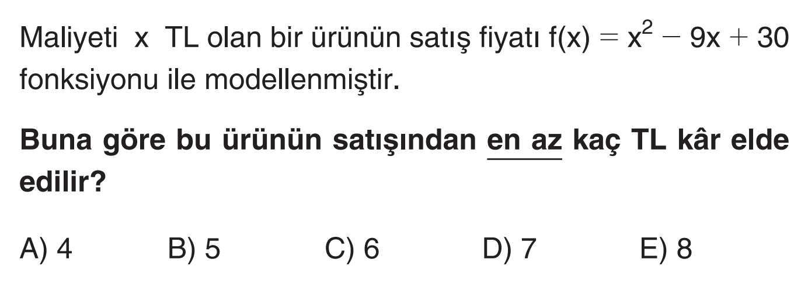
Çözüm
- Kâr = satış − maliyet $=x^2-9x+30-x=x^2-10x+30$.
- $=(x-5)^2+5$.
- En az kâr $5$ TL (B).
Cevap: B
Soru 11Cevap: C
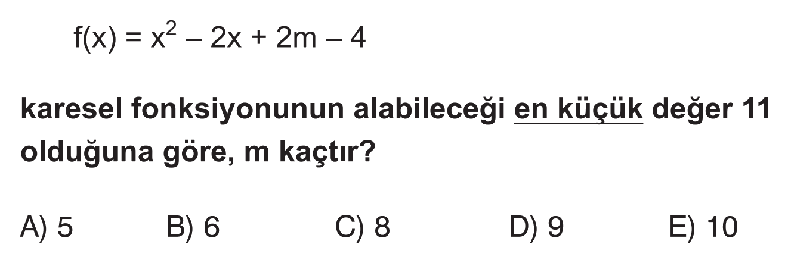
Çözüm
- $x^2-2x+2m-4=(x-1)^2+2m-5$.
- En küçük değer $2m-5=11$.
- $m=8$ (C).
Cevap: C
Soru 12Cevap: D
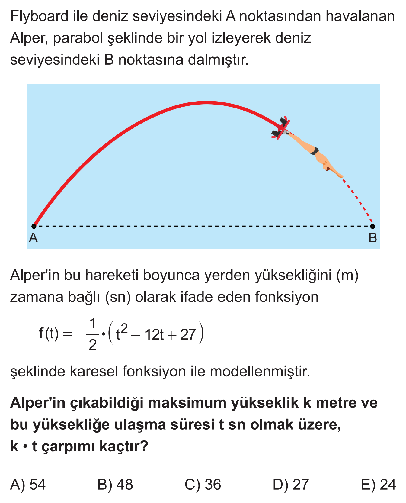
Çözüm
- $t^2-12t+27=(t-6)^2-9$.
- $f(t)=-\dfrac12(t-6)^2+\dfrac92$: en yüksek $k=\dfrac92$ m, $t=6$ sn'de.
- $k\cdot t=\dfrac92\cdot6=27$ (D).
Cevap: D
Soru 13Cevap: B
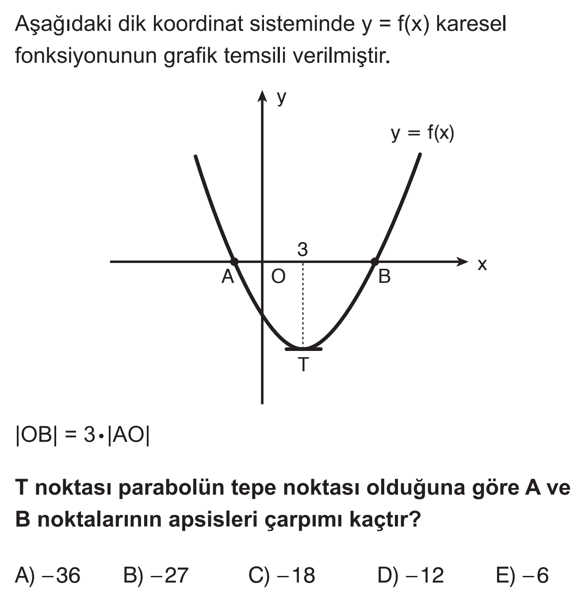
Çözüm
- $|AO|=t$ ise $A(-t,0)$, $B(3t,0)$.
- Tepe apsisi köklerin ortası: $\dfrac{-t+3t}2=t=3$.
- $A=-3$, $B=9$; çarpım $-27$ (B).
Cevap: B
Soru 14Cevap: A
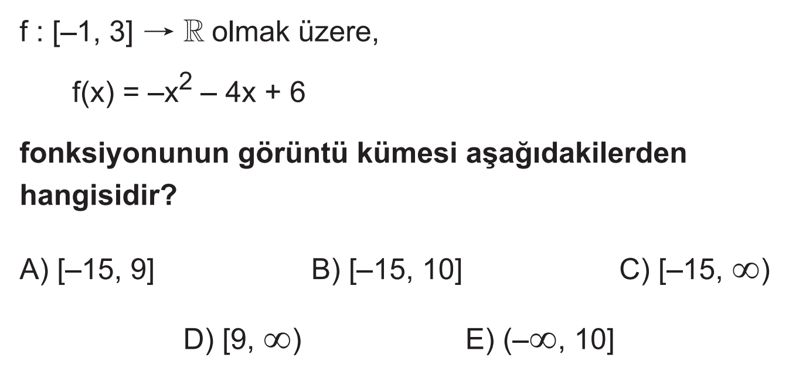
Çözüm
- $-x^2-4x+6=-(x+2)^2+10$; tepe $x=-2$, aralığın dışında.
- $[-1,3]$'te $f$ azalan: $f(-1)=9$, $f(3)=-15$.
- Görüntü kümesi $[-15,9]$ (A).
Cevap: A
Soru 15Cevap: C
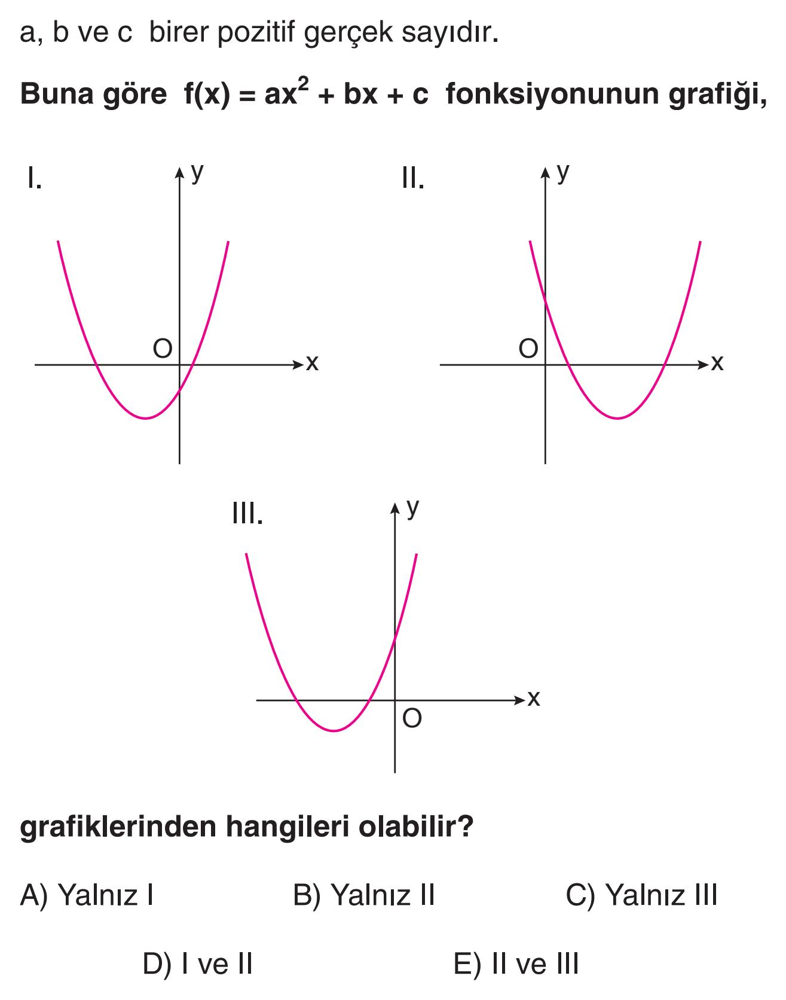
Çözüm
- $a\gt0$: kollar yukarı; $c=f(0)\gt0$: $y$ eksenini pozitifte keser.
- Tepe apsisi $-\dfrac b{2a}\lt0$: tepe solda.
- Bu üç özelliği yalnız III taşır (C).
Cevap: C
Soru 16Cevap: C
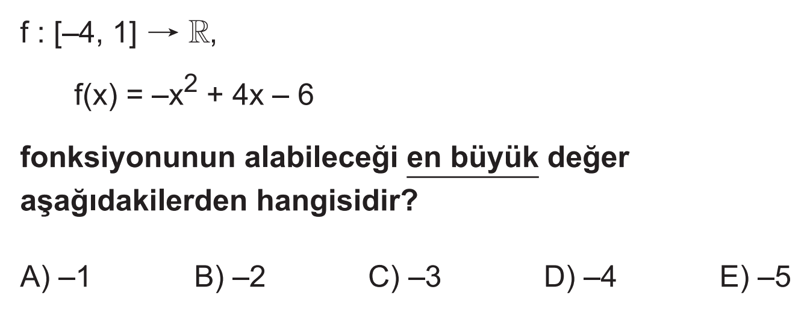
Çözüm
- $-x^2+4x-6=-(x-2)^2-2$; tepe $x=2$, $[-4,1]$'in dışında.
- Tepenin solunda ($a\lt0$) fonksiyon artan: en büyük değer sağ uçta.
- $f(1)=-1+4-6=-3$ (C).
Cevap: C
Soru 17Cevap: E
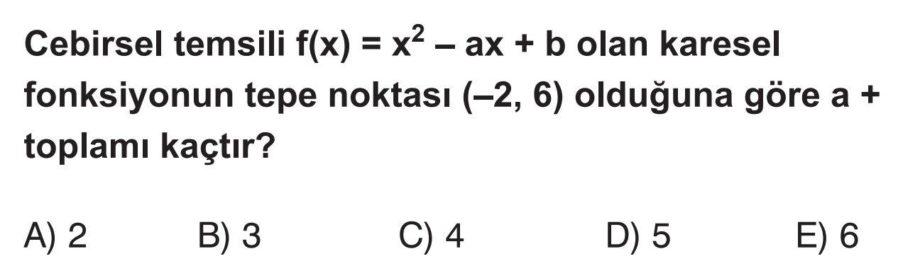
Çözüm
- $x^2-ax+b$'nin tepe apsisi $\dfrac a2=-2\Rightarrow a=-4$.
- $f(x)=x^2+4x+b$, $f(-2)=4-8+b=6\Rightarrow b=10$.
- $a+b=6$ (E).
Cevap: E
Soru 18Cevap: E
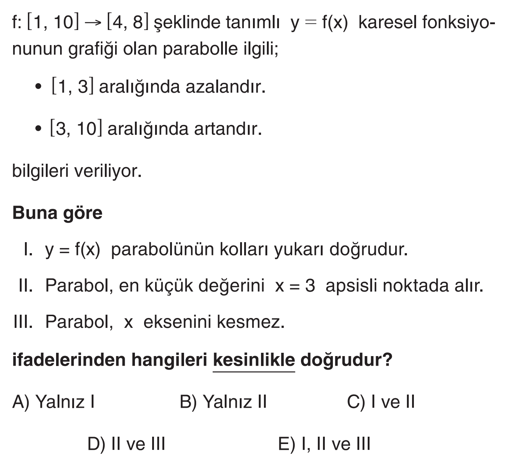
Çözüm
- $[1,3]$'te azalan, $[3,10]$'da artan: tepe $x=3$'te ve en küçük değer orada; kollar yukarı (I, II).
- Değer kümesi $[4,8]$: $f(x)\ge4\gt0$.
- Grafik $x$ eksenini kesmez (III). Cevap E.
Cevap: E
Soru 19Cevap: E
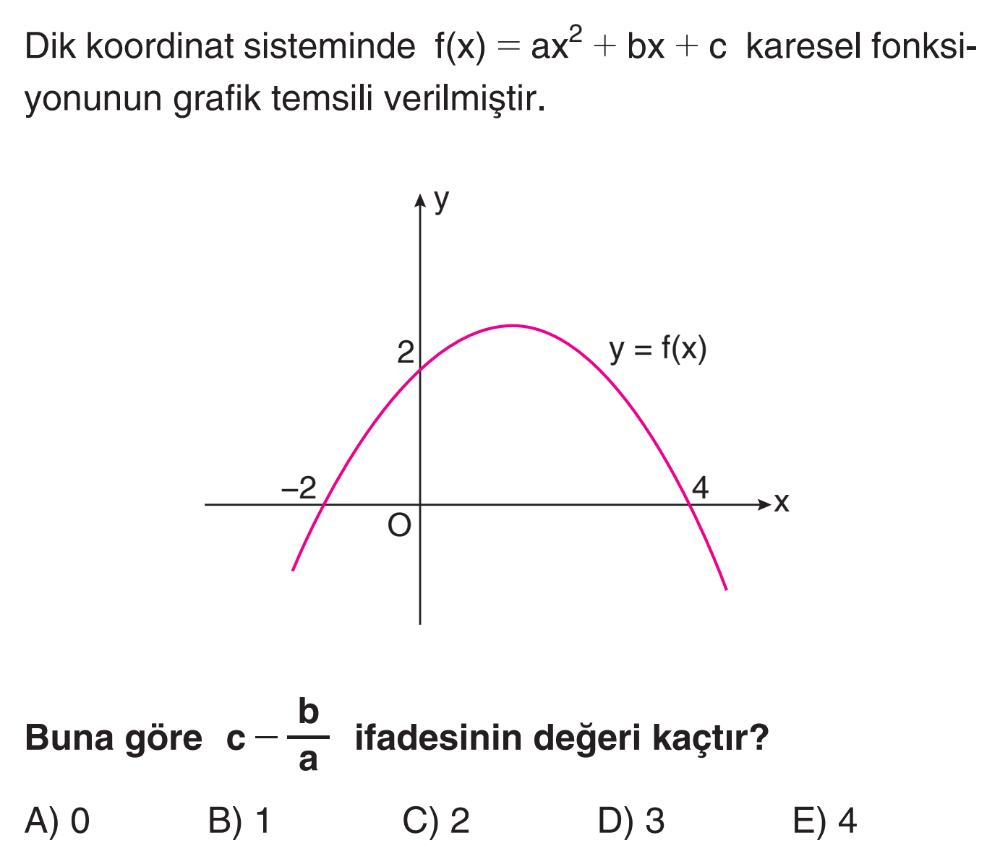
Çözüm
- Sıfırlar $-2$ ve $4$: $f(x)=a(x+2)(x-4)$; $f(0)=-8a=2\Rightarrow a=-\dfrac14$, $c=2$.
- Köklerin toplamı $-\dfrac ba=2\Rightarrow\dfrac ba=-2$.
- $c-\dfrac ba=2+2=4$ (E).
Cevap: E
Soru 20Cevap: A
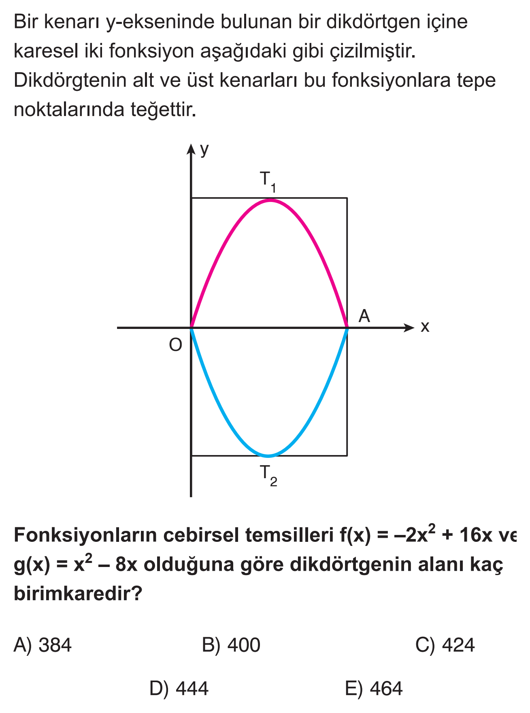
Çözüm
- $f(x)=-2x^2+16x=-2(x-4)^2+32$: $T_1(4,32)$; $g(x)=x^2-8x=(x-4)^2-16$: $T_2(4,-16)$.
- İkisinin de sıfırları $0$ ve $8$: dikdörtgenin genişliği $8$.
- Yükseklik $32+16=48$; alan $8\cdot48=384$ (A).
Cevap: A
Soru 21Cevap: E
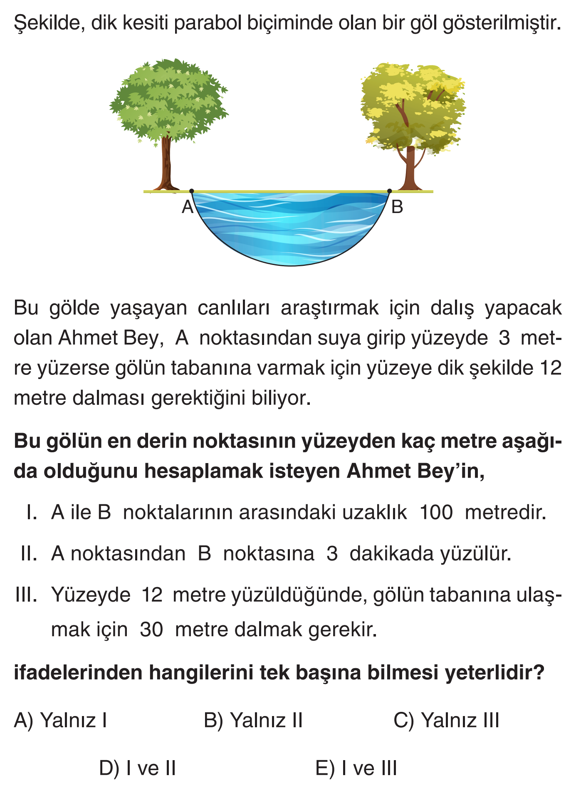
Çözüm
- A'yı orijin alalım: göl kesiti $f(x)=ax(x-r)$; verilen bilgi $(3,-12)$ noktasıdır.
- I: $r=100$ bilinirse $a$ bulunur, en derin nokta $f(50)$ hesaplanır; yeterli.
- III: ikinci nokta $(12,-30)$ ile iki bilinmeyen ($a$, $r$) bulunur; yeterli. II işe yaramaz. Cevap E.
Cevap: E
Soru 22Cevap: E
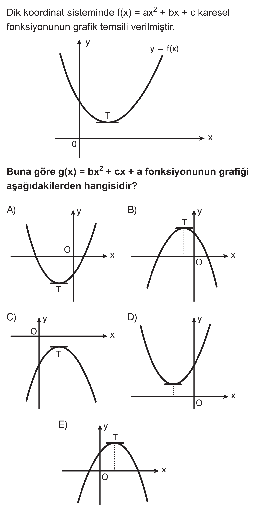
Çözüm
- $f$'nin kolları yukarı: $a\gt0$; tepe sağda: $-\dfrac b{2a}\gt0\Rightarrow b\lt0$; $y$ eksenini pozitifte kesiyor: $c\gt0$.
- $g(x)=bx^2+cx+a$: $b\lt0$ kollar aşağı; tepe apsisi $-\dfrac c{2b}\gt0$ (sağda).
- $g(0)=a\gt0$: kolları aşağı, tepesi sağda, $y$ eksenini pozitifte kesen grafik E.
Cevap: E
Soru 23Cevap: D
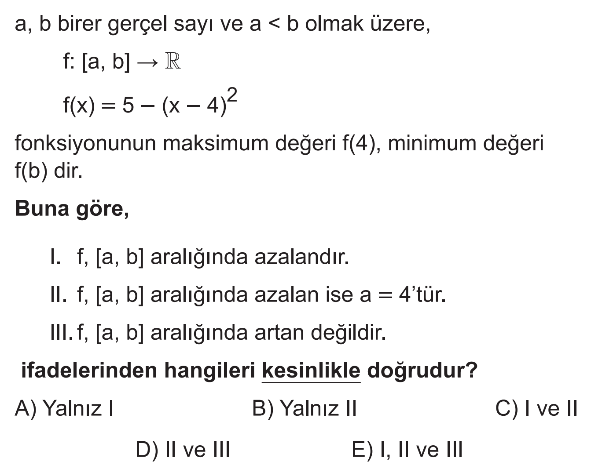
Çözüm
- Maksimum $f(4)$ ise $4\in[a,b]$; minimum $f(b)$ ise $b$, $4$'e $a$'dan daha uzak.
- $f$ tepenin solunda artan, sağında azalan; $a\lt4$ ise $[a,b]$'de önce artar, sonra azalır: I kesin değil.
- Azalan ise tepe aralığın başında olmalı: $a=4$ (II); en küçük değer sağ uçta olduğundan artan olamaz (III). Cevap D.
Cevap: D
Soru 24Cevap: D
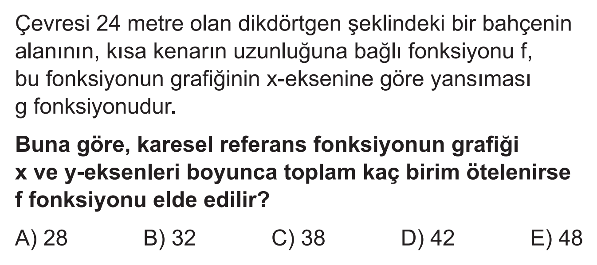
Çözüm
- Kenarlar $x$ ve $12-x$: $f(x)=x(12-x)=-(x-6)^2+36$.
- $g(x)=-f(x)=(x-6)^2-36$.
- $x^2$'nin grafiği 6 birim sağa, 36 birim aşağı: toplam $42$ birim (D).
Cevap: D